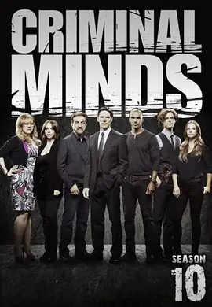

9.0
犯罪心理 第十季
Criminal Minds Season 10
2014
美国
评分 9.0
导演:
Glenn Kershaw / 托马斯·吉布森 / 马修·格雷·古柏勒 / 乔·曼特纳 / 拉里·滕
演员:
乔·曼特纳 / 谢默·摩尔 / 马修·格雷·古柏勒 / A·J·库克 / 克斯汀·范奈丝 / 詹妮弗·洛芙·休伊特
类型:
剧情,悬疑,犯罪
剧情简介
第十季自一桩连环杀人案揭开序幕，犯罪现场的残忍程度让 BAU 很快意识到，他们面对的并非单纯的暴力冲动，而是带有强烈“仪式感”的精密犯罪。霍奇带领团队赶赴全国各地调查，一处处场景从林地深处到郊区民宅，从废弃仓库到空旷高速旁的停车点，空气里都像悬着未散的恐惧。案件在推进过程中不断分化出支线，使 BAU 被迫同时追踪多个看似无关却隐隐勾连的犯罪模式。Blake 离开后，团队迎来新成员 Kate Callahan。她的实战风格干脆利落，又带着一丝难以忽视的敏感，这让她在初次面对复杂案件时表现出一种强烈的“破案直觉”。然而，她的过往经历也在暗处牵动着她的判断，让她有时显得格外谨慎。团队对她的接纳逐渐从观察转为信任，尤其是在一次行动中，Kate 以细微的行为线索锁定关键嫌犯，让所有人意识到她的加入不仅是补位，更是强化。瑞德在本季的推理依旧锐利，他从犯罪者遗留的小小破绽中读出心理轨迹，与嫌犯的心智对决常在无声间完成。摩根则继续承担行动前线的重任，他在面对危险时的果断与爆发力，对团队而言是一种稳定的保障。JJ 的角色日益成熟，她在情绪支持、受害者沟通以及现场判断上表现得愈发稳健，而加西亚始终是幕后支柱，她在冷冰冰的数据中找出突破口，也在最压抑的时刻用轻松的语气让团队保持呼吸。本季贯穿始终的“未知对象”如影随形，他似乎在暗处研究 BAU 的行动方式，以某种扭曲的方式模仿或反制他们，让团队每追进一步都像踩入迷宫。随着线索逐渐明朗，他们意识到对手不仅聪明，更危险——他将猎物锁定在整个社会结构的漏洞中，而 BAU 想要破局，就必须直面那些无法轻易解决的道德困境。第十季在节奏、情绪与案件规模上全面升级，让观众再一次看到 BAU 如何在黑暗边缘坚持原则，在每一次行动中守住让人性维持平衡的那条线。